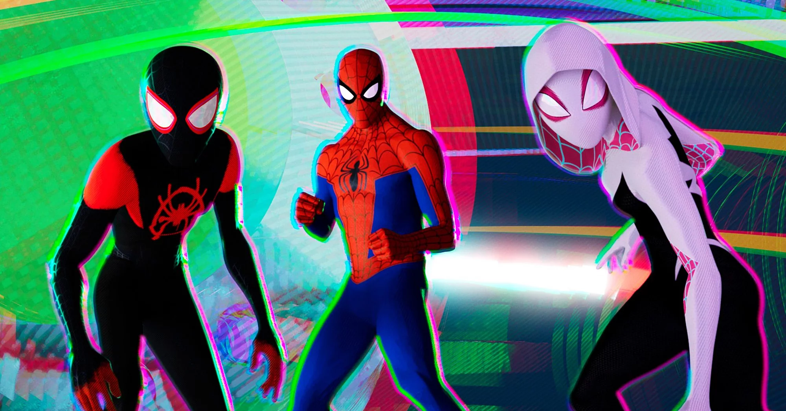

About Spider-Man
Spider-Man is a boy bitten by a spider, who chooses to protext those who need him using the powers of a spider!! Spider-Man was created by the late and great Stan Lee.
Spider-man and just some of his spider family!
Spider-Man characteristics
- He is a super hero, seen as a menace by the infamous reporter J Jonah Jameson, editor-in-cheif of the Daily Bugle
- He has the ability to swing from buildings using webs, they are also pretty handy for dealing with enemies.
- Doing what he can for his Neighbour hood
- He can also climb up walls effortlessly!
Spider-Mans Allies
Spider-man has many allies ranging from Gwen Stacy to Aunt May. Click the links below to read more about them: